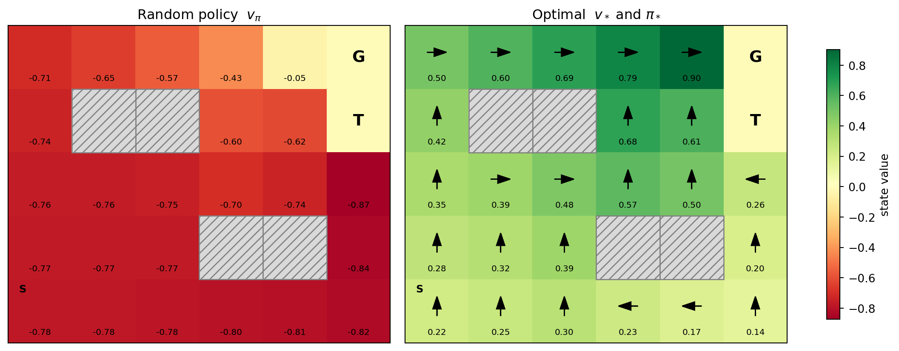
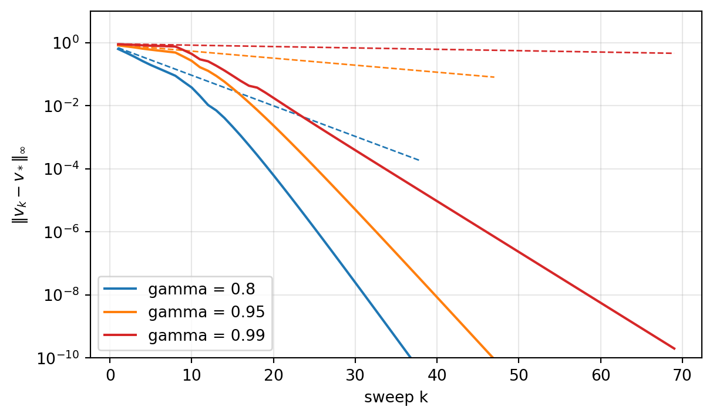
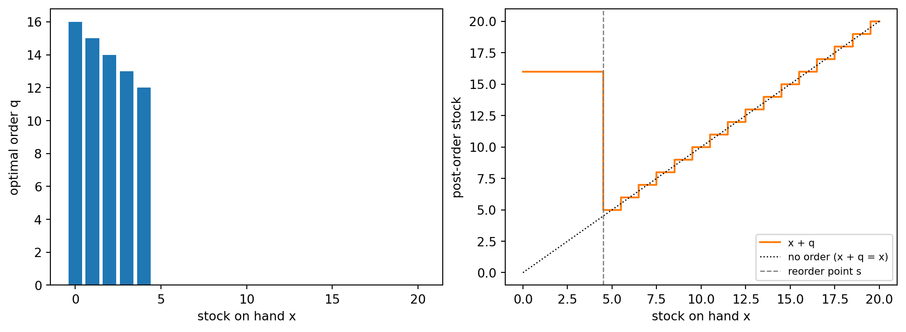

flowchart LR
V[Value estimate v] -->|greedy improvement| P[Policy pi]
P -->|evaluation| V
V -.->|converge together| S[(v*, pi*)]
P -.-> S
255 Markov Decision Processes and Dynamic Programming
The bandit chapters (Chapter 253 and Chapter 254) studied decisions whose consequences end the moment the reward arrives. Pull an arm, observe a payoff, repeat. Most consequential decisions do not work that way. A retailer’s order today sets the shelf it starts with tomorrow. A loan approved this quarter changes the portfolio that the next approval has to fit into. A robot’s step to the left changes which steps are possible next. In each case an action earns an immediate reward and also moves the world into a new situation, and the value of that new situation has to be counted too.
The Markov decision process (MDP) is the mathematical model of this kind of sequential problem. It is the common language of reinforcement learning, operations research, and optimal control, and almost every algorithm in the rest of this part of the book is a way of solving an MDP when some piece of it is unknown or too large to write down. This chapter assumes the opposite situation: the model is known and small. That assumption is unrealistic for most applications, but it lets us see the structure of the problem clearly. The tools that work here, dynamic programming in the form of policy iteration and value iteration, are the templates that Monte Carlo methods, temporal-difference learning, Q-learning (Chapter 256), and deep reinforcement learning all approximate.
255.1 The Agent-Environment Interface
Reinforcement learning splits the world into two parts. The agent is the decision maker. The environment is everything the agent cannot directly control. They interact in discrete time steps \(t = 0, 1, 2, \dots\). At each step the agent observes a state \(S_t\), chooses an action \(A_t\), and the environment responds with a reward \(R_{t+1}\) and a next state \(S_{t+1}\). The interaction produces a trajectory \[ S_0, A_0, R_1, S_1, A_1, R_2, S_2, A_2, R_3, \dots \]
The boundary between agent and environment is a modeling choice, not a physical fact. For an inventory manager, the warehouse, the customers, and the supplier are all environment, while the order decision is the agent. For a trading desk, the market is environment even though the desk’s own trades move prices. A useful rule from Sutton and Barto (2018) is that anything the agent cannot change arbitrarily belongs to the environment, including the reward signal itself. The agent may know exactly how rewards are computed and still be unable to change that computation.
The reward is a single number. That is a strong commitment. Profit, customer satisfaction, risk, and fairness have to be folded into one scalar per step, and whatever the reward fails to encode the agent will not care about. Much practical trouble in reinforcement learning, from reward hacking in language models (Chapter 259) to recommendation systems that maximize clicks at the expense of long-term retention, comes from a reward that is easy to measure but is not quite the objective.
255.2 The Markov Decision Process
A finite MDP is a tuple \((\mathcal{S}, \mathcal{A}, p, r, \gamma)\):
- \(\mathcal{S}\) is a finite set of states and \(\mathcal{A}\) a finite set of actions (we allow the available actions \(\mathcal{A}(s)\) to depend on the state when convenient).
- \(p(s' \mid s, a)\) is the transition probability of landing in state \(s'\) after taking action \(a\) in state \(s\).
- \(r(s, a) = \mathbb{E}[R_{t+1} \mid S_t = s, A_t = a]\) is the expected immediate reward.
- \(\gamma \in [0, 1)\) is the discount factor.
The defining assumption is the Markov property: the distribution of the next state and reward depends on the history only through the current state and action, \[ \Pr(S_{t+1} = s', R_{t+1} = r \mid S_t, A_t, S_{t-1}, A_{t-1}, \dots, S_0) = \Pr(S_{t+1} = s', R_{t+1} = r \mid S_t, A_t). \] The Markov property is a property of the state representation, not of the world. If a demand process has weekly seasonality, then “units on hand” is not a Markov state but “units on hand and day of week” may be. Choosing a state that is rich enough to be Markov, but small enough to be tractable, is the main modeling work in any applied MDP. When the agent cannot observe such a state at all, we move to the partially observable setting discussed at the end of the chapter.
The MDP formalism goes back to Bellman (1957), who introduced dynamic programming and the principle of optimality, and to Howard (1960), who introduced policy iteration. Puterman (1994) is the standard reference for the theory.
255.3 Returns and Discounting
The agent’s goal is not to maximize the next reward but the cumulative reward. The return from time \(t\) is the discounted sum \[ G_t = R_{t+1} + \gamma R_{t+2} + \gamma^2 R_{t+3} + \cdots = \sum_{k=0}^{\infty} \gamma^k R_{t+k+1}. \] It satisfies the one-line recursion that drives everything in this chapter, \[ G_t = R_{t+1} + \gamma G_{t+1}. \]
Discounting has three readings. Economically, \(\gamma\) is a per-period discount factor, so \(\gamma = 1/(1 + \rho)\) for an interest rate \(\rho\), and a reward one period later is worth \(\gamma\) times as much today. Probabilistically, \(1 - \gamma\) can be read as the probability that the process terminates at each step, so the discounted return is the expected undiscounted return of a process with a random geometric horizon. Mathematically, \(\gamma < 1\) with bounded rewards \(|R_t| \le R_{\max}\) guarantees \(|G_t| \le R_{\max}/(1 - \gamma)\), which keeps every quantity finite. The quantity \(1/(1 - \gamma)\) is the effective horizon. With \(\gamma = 0.99\) the agent is effectively planning about 100 steps ahead.
Some tasks are episodic. They end in a terminal state (a game is won, a customer churns, a loan is repaid). We model termination with an absorbing state that transitions only to itself with zero reward, which lets one formula cover both episodic and continuing tasks.
255.4 Policies and Value Functions
A policy \(\pi\) maps states to distributions over actions, \(\pi(a \mid s)\). A deterministic policy is the special case that puts all probability on one action, which we write \(\pi(s)\). For a fixed policy the agent’s behavior, and therefore the distribution of returns, is fully determined.
The state-value function of \(\pi\) is the expected return when starting in \(s\) and following \(\pi\), \[ v_\pi(s) = \mathbb{E}_\pi\left[ G_t \mid S_t = s \right], \] and the action-value function is the expected return when starting in \(s\), taking action \(a\) first, and following \(\pi\) afterwards, \[ q_\pi(s, a) = \mathbb{E}_\pi\left[ G_t \mid S_t = s, A_t = a \right]. \] The two are linked by \[ v_\pi(s) = \sum_a \pi(a \mid s)\, q_\pi(s, a), \qquad q_\pi(s, a) = r(s, a) + \gamma \sum_{s'} p(s' \mid s, a)\, v_\pi(s'). \]
The distinction matters in practice. If you know \(v_\pi\) you still need the model \(p\) to decide which action is best, because you must look one step ahead. If you know \(q_\pi\) you can act greedily by taking \(\arg\max_a q(s, a)\) with no model at all. That is why model-free control methods such as Q-learning (Chapter 256) learn action values rather than state values.
255.5 The Bellman Equations
255.5.1 Bellman expectation equation
Substitute \(G_t = R_{t+1} + \gamma G_{t+1}\) into the definition of \(v_\pi\) and use the Markov property to obtain the Bellman expectation equation \[ v_\pi(s) = \sum_a \pi(a \mid s) \left[ r(s, a) + \gamma \sum_{s'} p(s' \mid s, a)\, v_\pi(s') \right]. \] It says the value of a state is the expected immediate reward plus the discounted value of where you land. For a finite MDP, stack the values into a vector \(\mathbf{v}_\pi \in \mathbb{R}^{|\mathcal{S}|}\), define the policy’s transition matrix \(P_\pi(s, s') = \sum_a \pi(a \mid s)\, p(s' \mid s, a)\) and reward vector \(\mathbf{r}_\pi(s) = \sum_a \pi(a \mid s)\, r(s, a)\), and the equation becomes linear, \[ \mathbf{v}_\pi = \mathbf{r}_\pi + \gamma P_\pi \mathbf{v}_\pi \quad\Longrightarrow\quad \mathbf{v}_\pi = (I - \gamma P_\pi)^{-1} \mathbf{r}_\pi. \] The inverse exists because \(P_\pi\) is a stochastic matrix with spectral radius one, so \(\gamma P_\pi\) has spectral radius \(\gamma < 1\). Policy evaluation for a known small MDP is just a linear solve.
255.5.2 Bellman optimality equation
A policy \(\pi\) is at least as good as \(\pi'\) if \(v_\pi(s) \ge v_{\pi'}(s)\) for every state. For finite MDPs there is always an optimal policy \(\pi_*\) that is at least as good as every other policy in every state simultaneously, and there is always a deterministic one (Puterman 1994). Its value functions \(v_*\) and \(q_*\) satisfy the Bellman optimality equations \[ v_*(s) = \max_a \left[ r(s, a) + \gamma \sum_{s'} p(s' \mid s, a)\, v_*(s') \right], \] \[ q_*(s, a) = r(s, a) + \gamma \sum_{s'} p(s' \mid s, a) \max_{a'} q_*(s', a'). \] This is Bellman’s principle of optimality in equation form. Whatever the first action, the remaining decisions must be optimal for the state that results. Once \(v_*\) is known, any policy that is greedy with respect to it, \(\pi_*(s) \in \arg\max_a [r(s, a) + \gamma \sum_{s'} p(s' \mid s, a) v_*(s')]\), is optimal. The maximum makes the system nonlinear, so we can no longer solve it with one matrix inverse.
255.5.3 Why value iteration converges: the contraction argument
Define the Bellman optimality operator \(T\) acting on any value vector \(\mathbf{v}\), \[ (T\mathbf{v})(s) = \max_a \left[ r(s, a) + \gamma \sum_{s'} p(s' \mid s, a)\, v(s') \right]. \] The optimality equation says \(v_*\) is a fixed point, \(T v_* = v_*\). The key fact is that \(T\) is a \(\gamma\)-contraction in the sup norm. For any two value vectors \(\mathbf{u}\) and \(\mathbf{v}\) and any state \(s\), use the inequality \(|\max_a f(a) - \max_a g(a)| \le \max_a |f(a) - g(a)|\) to get \[ |(T\mathbf{u})(s) - (T\mathbf{v})(s)| \le \max_a \gamma \sum_{s'} p(s' \mid s, a)\, |u(s') - v(s')| \le \gamma \|\mathbf{u} - \mathbf{v}\|_\infty , \] since the transition probabilities sum to one. Taking the maximum over \(s\) gives \(\|T\mathbf{u} - T\mathbf{v}\|_\infty \le \gamma \|\mathbf{u} - \mathbf{v}\|_\infty\).
Banach’s fixed-point theorem then delivers three things at once. The fixed point \(v_*\) exists and is unique. Iterating \(\mathbf{v}_{k+1} = T\mathbf{v}_k\) from any starting vector converges to it. And the error shrinks geometrically, \[ \|\mathbf{v}_k - v_*\|_\infty \le \gamma^k \|\mathbf{v}_0 - v_*\|_\infty . \] A useful practical consequence is a stopping rule. If successive iterates satisfy \(\|\mathbf{v}_{k+1} - \mathbf{v}_k\|_\infty < \varepsilon\), then \(\|\mathbf{v}_{k+1} - v_*\|_\infty < \varepsilon\gamma/(1 - \gamma)\), and the greedy policy with respect to \(\mathbf{v}_{k+1}\) loses at most \(2\varepsilon\gamma/(1-\gamma)\) in value relative to \(\pi_*\) (Bertsekas and Tsitsiklis 1996). The same argument with the max replaced by the policy average shows the policy-evaluation operator \(T_\pi\) is also a \(\gamma\)-contraction.
255.6 Dynamic Programming Algorithms
255.6.1 Policy evaluation
Iterative policy evaluation applies \(T_\pi\) repeatedly, \[ v_{k+1}(s) = \sum_a \pi(a \mid s)\left[ r(s, a) + \gamma \sum_{s'} p(s' \mid s, a)\, v_k(s') \right], \] until the change between sweeps falls below a tolerance. For a few thousand states the direct linear solve is faster. For millions of states the iterative version wins because each sweep only needs the sparse transitions, and it is the version that generalizes to the sample-based methods of the next chapter.
255.6.2 Policy iteration
The policy improvement theorem says that if \(\pi'\) is greedy with respect to \(q_\pi\), so that \(q_\pi(s, \pi'(s)) \ge v_\pi(s)\) for all \(s\), then \(v_{\pi'}(s) \ge v_\pi(s)\) for all \(s\). Policy iteration (Howard 1960) alternates the two steps:
- Evaluate: compute \(v_{\pi_k}\) exactly.
- Improve: set \(\pi_{k+1}(s) = \arg\max_a q_{\pi_k}(s, a)\).
Each new policy is strictly better unless it is already optimal, and a finite MDP has finitely many deterministic policies, so the loop terminates in a finite number of iterations. In practice the number is strikingly small, often a handful even for large problems. Ye (2011) proved that for a fixed discount factor, policy iteration is strongly polynomial, with an iteration count bounded by a polynomial in the number of states and actions and in \(1/(1-\gamma)\).
255.6.3 Value iteration
Value iteration skips full evaluation and applies the optimality operator directly, \[ v_{k+1}(s) = \max_a \left[ r(s, a) + \gamma \sum_{s'} p(s' \mid s, a)\, v_k(s') \right]. \] Each sweep is cheap, but convergence is only geometric at rate \(\gamma\), so large discount factors need many sweeps. Policy iteration does more work per iteration and needs far fewer iterations.
255.6.4 Generalized policy iteration
Policy iteration and value iteration are two ends of a spectrum. Between them sits modified policy iteration, which runs a few sweeps of evaluation before each improvement. Sutton and Barto (2018) call the general pattern generalized policy iteration (GPI). Keep an approximate value function and an approximate policy, push the value toward the value of the current policy, push the policy toward greedy with respect to the current value, and let the two interact at whatever granularity is convenient. Asynchronous dynamic programming, which updates states one at a time in any order, is still GPI and still converges as long as every state keeps being updated.
GPI is the conceptual skeleton of almost all of reinforcement learning. Monte Carlo control, SARSA, and Q-learning (Chapter 256) replace the exact evaluation step with estimates from sampled experience. Actor-critic methods (Chapter 257) keep an explicit parameterized policy (the actor) and an explicit value estimate (the critic) and alternate small steps on each.
255.7 A Worked Example: Gridworld
We now build a small stochastic gridworld and solve it exactly. The agent moves north, east, south, or west on a grid with interior walls. Each move succeeds with probability \(1 - \eta\) and slips to one of the two perpendicular directions with probability \(\eta/2\) each. Bumping into a wall or the edge leaves the agent in place. Every step costs a small amount, entering the goal cell pays \(+1\), and entering the trap cell pays \(-1\). Both are terminal. The slip probability is what makes the problem interesting, because the shortest path to the goal runs alongside the trap, and an agent that slips there pays for it.
Code
import time
import numpy as np
import pandas as pd
import matplotlib.pyplot as plt
from scipy.optimize import linprog
from scipy.stats import poisson
rng = np.random.default_rng(623)
ROWS, COLS = 5, 6
WALLS = {(1, 1), (1, 2), (3, 3), (3, 4)}
GOAL, TRAP, START = (0, 5), (1, 5), (4, 0)
STEP_COST, SLIP, GAMMA = -0.04, 0.2, 0.95
ARROWS = ["N", "E", "S", "W"]
MOVES = [(-1, 0), (0, 1), (1, 0), (0, -1)]
cells = [(r, c) for r in range(ROWS) for c in range(COLS) if (r, c) not in WALLS]
idx = {s: i for i, s in enumerate(cells)}
nS, nA = len(cells), len(MOVES)
terminal = np.zeros(nS, dtype=bool)
terminal[[idx[GOAL], idx[TRAP]]] = True
def move(s, a):
r, c = s[0] + MOVES[a][0], s[1] + MOVES[a][1]
return (r, c) if (0 <= r < ROWS and 0 <= c < COLS and (r, c) not in WALLS) else s
# P[s, a, s'] transition probabilities and R[s, a] expected immediate reward.
P = np.zeros((nS, nA, nS))
R = np.zeros((nS, nA))
for s in cells:
i = idx[s]
if terminal[i]:
P[i, :, i] = 1.0 # absorbing, zero reward
continue
for a in range(nA):
for a_real, prob in [(a, 1 - SLIP), ((a + 1) % 4, SLIP / 2), ((a - 1) % 4, SLIP / 2)]:
s2 = move(s, a_real)
P[i, a, idx[s2]] += prob
bonus = 1.0 if s2 == GOAL else (-1.0 if s2 == TRAP else 0.0)
R[i, a] += prob * (STEP_COST + bonus)
assert np.allclose(P.sum(axis=2), 1.0)
print(f"states: {nS}, actions: {nA}, gamma: {GAMMA}, slip: {SLIP}")states: 26, actions: 4, gamma: 0.95, slip: 0.2The model is two arrays, P of shape \((|\mathcal{S}|, |\mathcal{A}|, |\mathcal{S}|)\) and R of shape \((|\mathcal{S}|, |\mathcal{A}|)\). Every algorithm below touches the MDP only through the expression R + GAMMA * P @ V, which computes the one-step lookahead \(q(s, a) = r(s, a) + \gamma \sum_{s'} p(s' \mid s, a) v(s')\) for all state-action pairs at once.
255.7.1 Evaluating a fixed policy
We first evaluate the uniform random policy two ways, by solving the linear system and by iterating \(T_\pi\), and check that they agree.
Code
def lookahead(V):
"""One-step lookahead q(s,a) = r(s,a) + gamma * sum_s' p(s'|s,a) V(s')."""
return R + GAMMA * P @ V
def evaluate_exact(pi):
"""Solve (I - gamma P_pi) v = r_pi for a stochastic policy pi[s, a]."""
P_pi = np.einsum("sa,sat->st", pi, P)
r_pi = (pi * R).sum(axis=1)
return np.linalg.solve(np.eye(nS) - GAMMA * P_pi, r_pi)
def evaluate_iterative(pi, tol=1e-10):
V, sweeps = np.zeros(nS), 0
while True:
V_new = (pi * lookahead(V)).sum(axis=1)
sweeps += 1
if np.max(np.abs(V_new - V)) < tol:
return V_new, sweeps
V = V_new
pi_random = np.full((nS, nA), 1.0 / nA)
v_rand_exact = evaluate_exact(pi_random)
v_rand_iter, sweeps = evaluate_iterative(pi_random)
print(f"iterative evaluation sweeps: {sweeps}")
print(f"max |exact - iterative| : {np.max(np.abs(v_rand_exact - v_rand_iter)):.2e}")
print(f"random-policy value at start: {v_rand_exact[idx[START]]:.3f}")iterative evaluation sweeps: 324
max |exact - iterative| : 1.52e-09
random-policy value at start: -0.779255.7.2 Policy iteration and value iteration
Policy iteration starts from an arbitrary deterministic policy. One detail matters in code: when two actions tie, the improvement step must keep the current action, or the loop can cycle forever between equally good policies. Value iteration records the sup-norm distance to the optimum at each sweep so we can check the contraction bound.
Code
def policy_iteration(max_iter=100):
pi = np.zeros(nS, dtype=int) # start: always go north
for it in range(1, max_iter + 1):
V = evaluate_exact(np.eye(nA)[pi])
Q = lookahead(V)
best = Q.argmax(axis=1)
# keep the current action unless another is strictly better
improve = Q[np.arange(nS), best] > Q[np.arange(nS), pi] + 1e-12
if not improve.any():
return pi, V, it
pi = np.where(improve, best, pi)
raise RuntimeError("policy iteration did not converge")
def value_iteration(gamma=GAMMA, tol=1e-10, v_ref=None):
V, errors = np.zeros(nS), []
while True:
V_new = (R + gamma * P @ V).max(axis=1)
if v_ref is not None:
errors.append(np.max(np.abs(V_new - v_ref)))
if np.max(np.abs(V_new - V)) < tol:
return V_new, np.array(errors)
V = V_new
t0 = time.perf_counter()
pi_star, v_star, pi_iters = policy_iteration()
t_pi = time.perf_counter() - t0
t0 = time.perf_counter()
v_vi, vi_err = value_iteration(v_ref=v_star)
t_vi = time.perf_counter() - t0
pi_vi = lookahead(v_vi).argmax(axis=1)
summary = pd.DataFrame({
"method": ["policy iteration", "value iteration"],
"iterations": [pi_iters, len(vi_err)],
"seconds": [t_pi, t_vi],
"V*(start)": [v_star[idx[START]], v_vi[idx[START]]],
})
print(summary.to_string(index=False, float_format=lambda x: f"{x:.4f}"))
print("max |V_PI - V_VI|:", f"{np.max(np.abs(v_star - v_vi)):.2e}")
nonterm = ~terminal
print("greedy policies agree on non-terminal states:",
bool(np.all(pi_vi[nonterm] == pi_star[nonterm]))) method iterations seconds V*(start)
policy iteration 4 0.0013 0.2200
value iteration 47 0.0017 0.2200
max |V_PI - V_VI|: 9.13e-11
greedy policies agree on non-terminal states: TrueBoth methods reach the same optimal values and the same greedy policy. Policy iteration needs only a few improvement steps, each of which is a full linear solve. Value iteration needs many more sweeps, each of which is a cheap matrix product. On a problem this small both finish in milliseconds. The tradeoff becomes real at scale, where a linear solve over millions of states is impossible but a sparse sweep is not.
Code
def to_grid(V):
G = np.full((ROWS, COLS), np.nan)
for s, i in idx.items():
G[s] = V[i]
return G
fig, axes = plt.subplots(1, 2, figsize=(11, 4.2), constrained_layout=True)
vmin = min(v_rand_exact.min(), v_star.min())
vmax = max(v_rand_exact.max(), v_star.max())
dxy = {0: (0, -0.3), 1: (0.3, 0), 2: (0, 0.3), 3: (-0.3, 0)}
for ax, V, title in [(axes[0], v_rand_exact, "Random policy $v_\\pi$"),
(axes[1], v_star, "Optimal $v_*$ and $\\pi_*$")]:
im = ax.imshow(to_grid(V), cmap="RdYlGn", vmin=vmin, vmax=vmax)
for (r, c) in WALLS:
ax.add_patch(plt.Rectangle((c - 0.5, r - 0.5), 1, 1, fill=True,
facecolor="0.85", hatch="///", edgecolor="0.5"))
for s, i in idx.items():
r, c = s
label = {GOAL: "G", TRAP: "T"}.get(s, "")
if label:
ax.text(c, r, label, ha="center", va="center", fontsize=14, weight="bold")
continue
ax.text(c, r + 0.33, f"{V[i]:.2f}", ha="center", va="center", fontsize=7.5)
if s == START:
ax.text(c - 0.33, r - 0.3, "S", fontsize=9, weight="bold")
if V is v_star:
dx, dy = dxy[pi_star[i]]
ax.arrow(c - dx / 2, r - dy / 2 - 0.08, dx, dy, head_width=0.13,
length_includes_head=True, color="k")
ax.set_xticks([]); ax.set_yticks([])
ax.set_title(title)
fig.colorbar(im, ax=axes, shrink=0.85, label="state value")
plt.show()
The left panel shows how poor a random policy is. Almost every state has negative value, because a wandering agent accumulates step costs and stumbles into the trap about as often as it finds the goal. The right panel shows the optimal policy, and the geometry of the risk is visible in its shape. The goal can only be entered from the west, since the cell directly below it is the trap. The cells in the right-hand column below the trap therefore head west and climb through the open middle of the grid instead of moving north toward the goal. Values also fall off near the trap, because from there a single slip can end the episode with a penalty. Try changing SLIP or STEP_COST and rerunning. The optimal behavior is a joint function of dynamics, rewards, and discounting, and it is rarely obvious by inspection, which is exactly why we solve for it.
255.7.3 Checking the contraction bound
The contraction argument predicts \(\|\mathbf{v}_k - v_*\|_\infty \le \gamma^k \|\mathbf{v}_0 - v_*\|_\infty\). We run value iteration at several discount factors and plot the measured error against that bound.
Code
fig, ax = plt.subplots(figsize=(7, 4))
rows = []
for g, color in [(0.8, "C0"), (0.95, "C1"), (0.99, "C3")]:
v_ref, _ = value_iteration(gamma=g, tol=1e-13) # high-precision optimum
v_ref, _ = value_iteration(gamma=g, tol=1e-13)
_, err = value_iteration(gamma=g, tol=1e-10, v_ref=v_ref)
k = np.arange(1, len(err) + 1)
e0 = np.max(np.abs(v_ref)) # ||v_0 - v*|| with v_0 = 0
ax.semilogy(k, err, color=color, label=f"gamma = {g}")
ax.semilogy(k, e0 * g ** k, color=color, ls="--", lw=1)
rows.append({"gamma": g, "sweeps to 1e-10": len(err),
"bound holds": bool(np.all(err <= e0 * g ** k + 1e-12))})
ax.set_xlabel("sweep k"); ax.set_ylabel(r"$\|v_k - v_*\|_\infty$")
ax.set_ylim(1e-10, 10); ax.legend(); ax.grid(alpha=0.3)
plt.show()
print(pd.DataFrame(rows).to_string(index=False))
gamma sweeps to 1e-10 bound holds
0.80 38 True
0.95 47 True
0.99 69 TrueThe measured error always lies under its dashed bound. The bound itself is pessimistic for this problem. It predicts a sweep count that grows like \(\log(1/ arepsilon)/(1 - \gamma)\), which would make \(\gamma = 0.99\) about five times as expensive as \(\gamma = 0.95\), yet the measured sweep counts grow far more slowly. The reason is that the gridworld is episodic. Under a good policy the agent reaches a terminal state within a few steps, so values are determined by short paths and the error decays at the rate of the slowest mode of the policy’s transition matrix rather than at the worst-case rate \(\gamma\). In a continuing problem with no absorbing states, such as the inventory model below, the \(1/(1-\gamma)\) scaling is much closer to what you observe.
255.8 The Linear-Programming View
The optimal value function is also the solution of a linear program (Manne 1960). Because \(T\) is monotone and a contraction, any vector that satisfies \(\mathbf{v} \ge T\mathbf{v}\) componentwise is an upper bound on \(v_*\). The smallest such vector is \(v_*\) itself, which gives the primal LP \[
\min_{\mathbf{v}} \sum_s \mu(s)\, v(s)
\quad \text{subject to} \quad
v(s) \ge r(s, a) + \gamma \sum_{s'} p(s' \mid s, a)\, v(s') \quad \forall s, a ,
\] for any strictly positive weights \(\mu\). The dual LP has one variable \(x(s, a) \ge 0\) per state-action pair, interpretable as a discounted state-action occupancy measure, and its optimal solution puts positive mass only on optimal actions. The dual is useful in practice because it makes constraints easy to express. A constrained MDP, for example “maximize revenue subject to an expected cost budget,” adds a single linear constraint on \(x\). The LP view also underlies approximate methods that restrict \(\mathbf{v}\) to a linear feature space (de Farias and Van Roy 2003). We solve the gridworld LP with scipy and confirm it agrees with dynamic programming.
Code
# constraint for each (s,a): -(e_s - gamma * P[s,a]) . v <= -R[s,a]
A_ub = -(np.repeat(np.eye(nS), nA, axis=0) - GAMMA * P.reshape(nS * nA, nS))
b_ub = -R.reshape(nS * nA)
res = linprog(c=np.ones(nS), A_ub=A_ub, b_ub=b_ub, bounds=[(None, None)] * nS,
method="highs")
print("LP status:", res.message)
print(f"max |V_LP - V_PI| = {np.max(np.abs(res.x - v_star)):.2e}")LP status: Optimization terminated successfully. (HiGHS Status 7: Optimal)
max |V_LP - V_PI| = 7.77e-16For small and medium problems, a modern LP solver is a perfectly good way to solve an MDP, and it is the natural choice when side constraints are present. For large problems dynamic programming and its sampled approximations scale better.
255.9 A Business MDP: Inventory Control
Gridworlds are a teaching device. Here is a small MDP of the kind that appears in operations. A store stocks a single product and reviews inventory once per period. The state is the number of units on hand, \(x \in \{0, \dots, M\}\). The action is the order quantity \(q \in \{0, \dots, M - x\}\), delivered immediately. Demand \(D\) is Poisson. Sales are \(\min(x + q, D)\) and unmet demand is lost. The period’s reward is revenue minus a fixed ordering cost \(K\) whenever \(q > 0\), a per-unit purchase cost \(c\), and a holding cost \(h\) on leftover stock, \[ r(x, q) = \mathbb{E}\left[ p \min(x + q, D) - K\,\mathbb{1}[q > 0] - c\, q - h\, (x + q - D)^+ \right], \] and the next state is \((x + q - D)^+\). The classical analysis of this problem dates to Arrow, Harris, and Marschak (1951). With a fixed ordering cost, the optimal policy typically has an \((s, S)\) form. When stock falls to \(s\) or below, order up to \(S\). Otherwise order nothing. We do not impose that structure. We solve the MDP and see whether it emerges.
Code
M, LAM = 20, 6.0 # capacity, mean demand per period
PRICE, K_FIX, C_UNIT, HOLD = 8.0, 10.0, 3.0, 0.5
GAMMA_INV = 0.95
d = np.arange(M + 1)
pmf = poisson.pmf(d, LAM)
pmf[-1] += poisson.sf(M, LAM) # lump the tail at M (demand above capacity)
Pi = np.zeros((M + 1, M + 1, M + 1)) # [x, q, x'] , infeasible q masked later
Ri = np.full((M + 1, M + 1), -np.inf)
for x in range(M + 1):
for q in range(M - x + 1):
y = x + q # post-order stock
sales = np.minimum(y, d)
left = np.maximum(y - d, 0)
Ri[x, q] = (pmf * (PRICE * sales - HOLD * left)).sum() - C_UNIT * q - K_FIX * (q > 0)
np.add.at(Pi[x, q], left, pmf)
V = np.zeros(M + 1)
for sweep in range(2000):
Q = Ri + GAMMA_INV * Pi @ V
V_new = Q.max(axis=1)
if np.max(np.abs(V_new - V)) < 1e-9:
break
V = V_new
order = Q.argmax(axis=1)
post = np.arange(M + 1) + order
s_point = np.max(np.where(order > 0)[0]) if (order > 0).any() else None
S_level = post[0]
print(f"value iteration sweeps: {sweep + 1}")
print(f"reorder point s = {s_point}, order-up-to level S = {S_level}")
fig, axes = plt.subplots(1, 2, figsize=(10, 3.6), constrained_layout=True)
axes[0].bar(np.arange(M + 1), order, color="C0")
axes[0].set_xlabel("stock on hand x"); axes[0].set_ylabel("optimal order q")
axes[1].step(np.arange(M + 1), post, where="mid", color="C1", label="x + q")
axes[1].plot([0, M], [0, M], "k:", lw=1, label="no order (x + q = x)")
axes[1].axvline(s_point + 0.5, color="0.5", ls="--", lw=1, label="reorder point s")
axes[1].set_xlabel("stock on hand x"); axes[1].set_ylabel("post-order stock")
axes[1].legend(fontsize=8)
plt.show()value iteration sweeps: 465
reorder point s = 4, order-up-to level S = 16
The solved policy has exactly the \((s, S)\) shape. Below the reorder point the store orders up to the same target regardless of how low it is, and above the reorder point it orders nothing, because the fixed cost \(K\) is not worth paying for a small top-up. The model gives more than the shape. It gives the numbers, the value of the business in each state, and a way to answer what-if questions by changing a parameter and resolving. Doubling K_FIX widens the gap between \(s\) and \(S\), so the store orders less often and in larger batches. Raising HOLD pulls \(S\) down. Setting K_FIX to zero removes the reason to batch, and the policy collapses to a pure base-stock rule that tops up to the target every period.
This is the practical sweet spot for exact dynamic programming. When the state is low dimensional and the dynamics can be estimated from data (here, a demand distribution), solving the MDP exactly is cheap, transparent, and auditable. When the state is high dimensional (a multi-product warehouse, a customer described by hundreds of features), the table does not fit and the methods of Chapter 256 and Chapter 257 take over.
255.10 Partial Observability
The MDP assumes the agent sees the state. Often it does not. A clinician sees symptoms, not the disease. A marketer sees clicks, not intent. A partially observable MDP (POMDP) adds an observation space \(\mathcal{O}\) and an observation model \(o(z \mid s', a)\), the probability of seeing \(z\) after action \(a\) leads to state \(s'\) (Åström 1965, Smallwood and Sondik 1973). The agent can no longer condition on the state, but it can condition on its belief \(b(s)\), the posterior probability of each state given the history. After taking \(a\) and observing \(z\), Bayes’ rule updates the belief, \[ b'(s') \propto o(z \mid s', a) \sum_s p(s' \mid s, a)\, b(s). \] The belief is a Markov state, so a POMDP is an MDP over the continuous belief simplex (Kaelbling, Littman, and Cassandra 1998). That observation is exact but sobering. Exact POMDP planning is intractable beyond small problems, because the belief space is continuous and high dimensional. Practical systems approximate. They plan over a sampled set of beliefs, they summarize history with hand-built features such as recent observations and time since last event, or, in deep reinforcement learning, they let a recurrent network or a transformer learn its own summary of history. The modeling lesson carries over regardless of method. If the agent’s input is not Markov, more data and bigger networks will not fully compensate, and the first fix is usually to enrich what the agent conditions on.
255.11 Pitfalls and When to Use
State design is the whole game. Dynamic programming is exact for the MDP you wrote down. If the state omits something that drives transitions (seasonality, a backlog, a customer’s tenure), the computed policy is optimal for the wrong problem. Before solving, test the Markov assumption on data: does adding a lagged variable to the state change the predicted next-state distribution?
The curse of dimensionality. Bellman (1957) coined the phrase for this method. A state built from \(d\) variables with \(k\) levels each has \(k^d\) entries, and every sweep touches all of them. Exact DP is the right tool when the state space has at most a few million entries and a sparse transition model. Beyond that, use approximate dynamic programming or reinforcement learning.
The model is an estimate. In applications \(p\) and \(r\) are fitted from data, and DP will exploit any optimism in the fitted model. A demand distribution with a too-thin tail produces a stocking policy that looks profitable on paper and runs out in practice. Check the solved policy by simulating it under alternative plausible models, and prefer robust or conservative choices when the model is uncertain. This concern returns in force in model-based and offline reinforcement learning (Chapter 258).
Discounting changes the answer. A larger \(\gamma\) is not simply “more accurate.” It changes which policy is optimal by changing how future rewards trade against present ones. Pick \(\gamma\) from the economics of the problem (cost of capital, expected customer lifetime) rather than by convention, and remember that convergence time scales with \(1/(1-\gamma)\).
Ties and numerical tolerance. As the policy-iteration code shows, ties between actions are common in structured problems, and naive tie-breaking can make an algorithm cycle. Use a strict-improvement test and a tolerance.
When to use which method. Use a direct linear solve for policy evaluation on small problems. Use policy iteration when you can afford a few large linear solves and want an exact answer fast. Use value iteration, or a few evaluation sweeps per improvement, when states number in the millions and transitions are sparse. Use the LP formulation when there are side constraints on expected costs or occupancy. Move to sampling-based methods when the model is unknown or the state space is too large to enumerate.
255.12 References
- Sutton, R. S. and Barto, A. G. Reinforcement Learning: An Introduction, 2nd ed. MIT Press, 2018. http://incompleteideas.net/book/the-book-2nd.html
- Bellman, R. Dynamic Programming. Princeton University Press, 1957.
- Howard, R. A. Dynamic Programming and Markov Processes. MIT Press, 1960.
- Puterman, M. L. Markov Decision Processes: Discrete Stochastic Dynamic Programming. Wiley, 1994. https://doi.org/10.1002/9780470316887
- Bertsekas, D. P. and Tsitsiklis, J. N. Neuro-Dynamic Programming. Athena Scientific, 1996.
- Ye, Y. “The Simplex and Policy-Iteration Methods Are Strongly Polynomial for the Markov Decision Problem with a Fixed Discount Rate.” Mathematics of Operations Research 36(4), 2011, pp. 593-603. https://doi.org/10.1287/moor.1110.0516
- Manne, A. S. “Linear Programming and Sequential Decisions.” Management Science 6(3), 1960, pp. 259-267. https://doi.org/10.1287/mnsc.6.3.259
- de Farias, D. P. and Van Roy, B. “The Linear Programming Approach to Approximate Dynamic Programming.” Operations Research 51(6), 2003, pp. 850-865. https://doi.org/10.1287/opre.51.6.850.24925
- Arrow, K. J., Harris, T., and Marschak, J. “Optimal Inventory Policy.” Econometrica 19(3), 1951, pp. 250-272. https://doi.org/10.2307/1906813
- Åström, K. J. “Optimal Control of Markov Processes with Incomplete State Information.” Journal of Mathematical Analysis and Applications 10(1), 1965, pp. 174-205. https://doi.org/10.1016/0022-247X(65)90154-X
- Smallwood, R. D. and Sondik, E. J. “The Optimal Control of Partially Observable Markov Processes over a Finite Horizon.” Operations Research 21(5), 1973, pp. 1071-1088. https://doi.org/10.1287/opre.21.5.1071
- Kaelbling, L. P., Littman, M. L., and Cassandra, A. R. “Planning and Acting in Partially Observable Stochastic Domains.” Artificial Intelligence 101(1-2), 1998, pp. 99-134. https://doi.org/10.1016/S0004-3702(98)00023-X
How to cite this chapter
Nguyen, M. (2026). Markov Decision Processes and Dynamic Programming. In AI in Action: A Reference for Artificial Intelligence. https://mikenguyen13.github.io/ai_in_action/623-markov-decision-processes.html
BibTeX
@incollection{nguyen2026aiinaction-623markovdecisionprocesses,
author = {Nguyen, Mike},
title = {{Markov Decision Processes and Dynamic Programming}},
booktitle = {{AI in Action: A Reference for Artificial Intelligence}},
year = {2026},
url = {https://mikenguyen13.github.io/ai_in_action/623-markov-decision-processes.html},
note = {Online book}
}